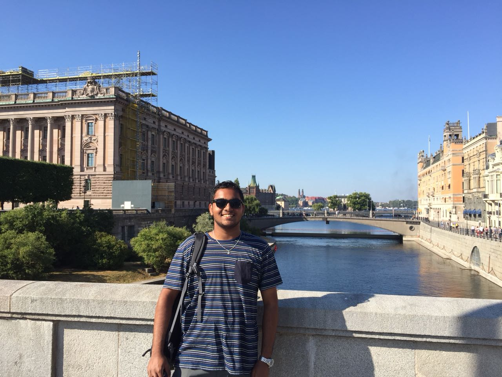

z.png)
Autonomous systems enthusiast
I have exposed myself to the wonderful world of enbedded and electronics systems as a Mechatronics student. I have experienced working with the Arduino Uno and Raspberry Pi for a few projects at the UW Robotics team.
I have also designed and bulit a working robot called the ShotBot(TM) with the LegoEV3 and Tetrix prime kits, which used several sensors and algorithms to process the sensor information, so that the robot can help in shooting with a high accuracy rate. I had worked on intergating the LiDAR system for the University of Waterloo's Robotics team's autonomous robot racing car- The HummingBot. More about these can be found in the projects section.
I am now in the Electrical subeam of the University of Waterloo's Formula Electric design team, where I have done BOM managament and helped the team with wire harnessing. Currently, I am looking into the problems faced by the Wheel Sensor Board (WSB) on the team's car.
Through my previous coop placement at the UW Robotics team, I have become experienced with different CAD Software tools such as AutoCAD and SolidWorks. I have also learned how to encode G and M code for CNC machinery.
For testing tools, I have experienced the wonderful, ANSYS CFD software, for testing a part I had designed for the team
As for 3D rendering for product showcasing, I have experienced rendering in SolidWorks' Visualizer 2019. I have also done a few projects in Blender for modeling and rendering my project from the UW robotics team.
I am fluent in C++ and C. I also have experience in a ROS software for Lego robots called RobotC.
Apart from this, I have experience in Python. Being an autonomous systems enthusiast, I have used my Python skills for artificial intelligence projects and am proficient in a few machine learning libraries such as Tensorflow, KerasAPI and OpenCV! I also have experience in programming controllers in Python for self driving cars, and have used the CARLA simulator for testing the controller.
I am skilled in HTML and CSS programming for webpages, as well as Javascript for the reactive elements of the webpage.
A gallery of all of my projects
Complete Design Portfolio
Huawei Technologies | January 2022 - April 2022
University of Waterloo | May 2021 - Aug 2021
University of Waterloo Robotics | January 2020 - April 2020
University of Waterloo Formula Electric | Apr 2021 - Present
University of Waterloo Robotics | Jan 2020 - Jan 2021
University of Waterloo Formula Motrsports | Jan 2020 - Apr 2020
StarterHacks | Jan 2020
Mechatronics Mentorship Program | Aug 2020 - Dec 2020
Holy Spirit Church Oman | Jun 2018
Mechatronics engineering student @ University of Waterloo
Born and raised in the lovely Arabian country of Oman, I always fell in love with robotics after attending a robotic conference at the local conference grounds. As of now, I am a student at the University of Waterloo, pursuing my B.A.Sc in (Honours) Mechatronics Engineering and will be specializing in Artificial intelligence systems. As seen from my skills, I have been trying to make my life long experience in many electromechanical systems as I always wanted to be an engineer that makes products for the betterment of humanity, especially in robotic systems.
Additionally, I would like to state that I am a team player and can assume any role in a team. I am goal-oriented and possess very strong work-ethics. I like and respect every individual for who they are. This quality has helped me grow tremendously as a person and I continue to grow along with people around me. I try not to miss any opportunity to learn a new skillset or a new piece of information. You’ll find me to be an enthusiastic, honest and friendly person with a pleasing personality.
When I am not doing academia or robotic related things, I love to use my guitar playing skills by playing for the local choir when I'm back home in Oman, or just playing the guitar casually in my free time. I also love to play Football and E-sports games such as Counter Strike, League of Legends, and even Genshin Impact!